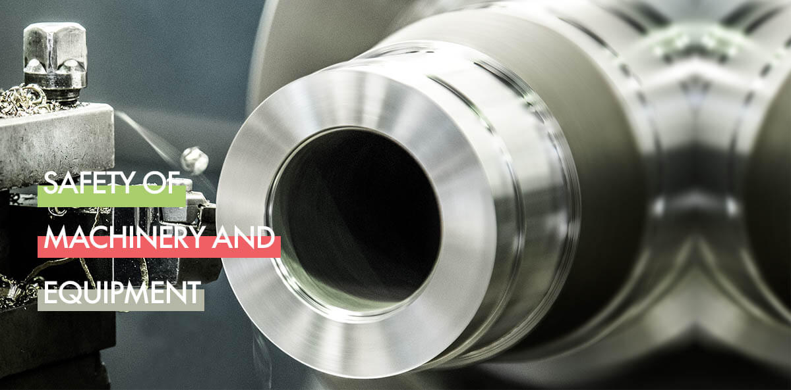

製造或輸入指定產品辦理申報登錄、先行放行及免申報(驗)等。
初次使用工商(自然人)憑證登入請安裝HICOS元件及跨平台元件，安裝後即可由此登入。 若無憑證者，可於系統申請臨時帳號作為短期登入使用。(申請廠商帳號 | 申請個人帳號 | 帳號登入)
:::

提供完成登錄產品查詢、完成驗證產品查詢、被授權資料查詢、申報登錄歷史專區、不符合事實產品資訊查詢、尚未列管產品已完成型式驗證(檢定)專區
申報登錄產品查詢
最新消息
-
產品安全資訊申報登錄及型式驗證規費收費標準第2條、第5條、第9條修正條文
本修正條文涉及申報登錄、先行放行及免申報(免驗證)規費之收取及調整，詳細資訊請至本網站「下載專區\法規專區」下載「產品安全資訊申報登錄及型式驗證規費收費標準第2條、第5條、第9九條修正條文.PDF」。109年4月8日凌晨0點後申請案件，適用修正規定之金額。詳全文
-
產品安全資訊申報登錄及型式驗證規費收費標準第2條、第5條、第9條修正條文。產品安全資訊申報登錄及型式驗證規費收費標準第2條、第5條、第9條修正條文
-
產品安全資訊申報登錄及型式驗證規費收費標準第2條、第5條、第9條修正條文
-
產品安全資訊申報登錄及型式驗證規費收費標準第2條、第5條、第9條修正條文
-
產品安全資訊申報登錄及型式驗證規費收費標準第2條、第5條、第9條修正條文
諮詢服務專線
-
案件審核問題諮詢：請優先洽詢各 審核單位初審、複審人員
-
法規相關問題諮詢電話：02-8995-6666
-
功能操作及系統異常通報諮詢專線：0800-035-959(原0965-579-665)
-
申報系統登錄諮詢專線：02-2701-3181
分機 614/610/666/604 -
通關簽審問題諮詢專線：0800-082-188 關貿網路客服中心
-
系統諮詢時間：週一至週五 上午9:30-12:30
下午13:30-17:30
型式檢定機構資訊
-
財團法人台灣大電力研究試驗中心(TERTEC)電話：(03)483-9090
傳真：(03)483-7960
地址： 桃園市觀音區草漯里榮工南路6-6號 -
財團法人工業技術研究院(ITRI)電話：(03)582-0100 (03)591-4935
傳真：(03)583-4405
地址： 新竹縣竹東鎮中興路四段195號 -
財團法人精密機械研究發展中心(PMC)電話：(04)2359-9009
傳真：(04)2359-8846
地址： 臺中市西屯區工業區三十七路27號 -
財團法人金屬工業研究發展中心(MIRDC)電話:(07)351-3121
傳真：(07)352-1528
地址： 高雄市楠梓區高楠公路1001號 -
財團法人台灣商品檢測驗證中心(ETC)原：財團法人台灣電子檢驗中心電話：(03)483-9090
傳真：(03)483-7960
地址： 桃園市觀音區草漯里榮工南路6-6號
E-learning
-
線上申請產品製造者或輸入者線上登錄
-
廠商維護申請廠商資料及生產廠場維護
-
憑證登入使用憑證登入系統相關操作
-
繳費作業繳費作業相關操作